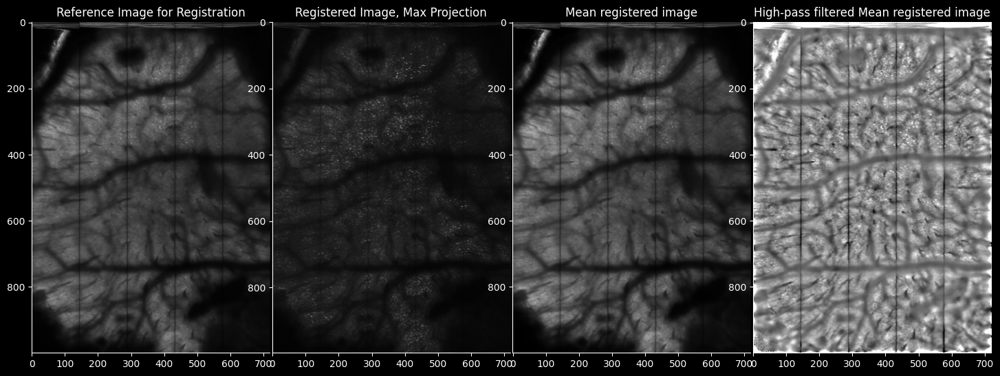
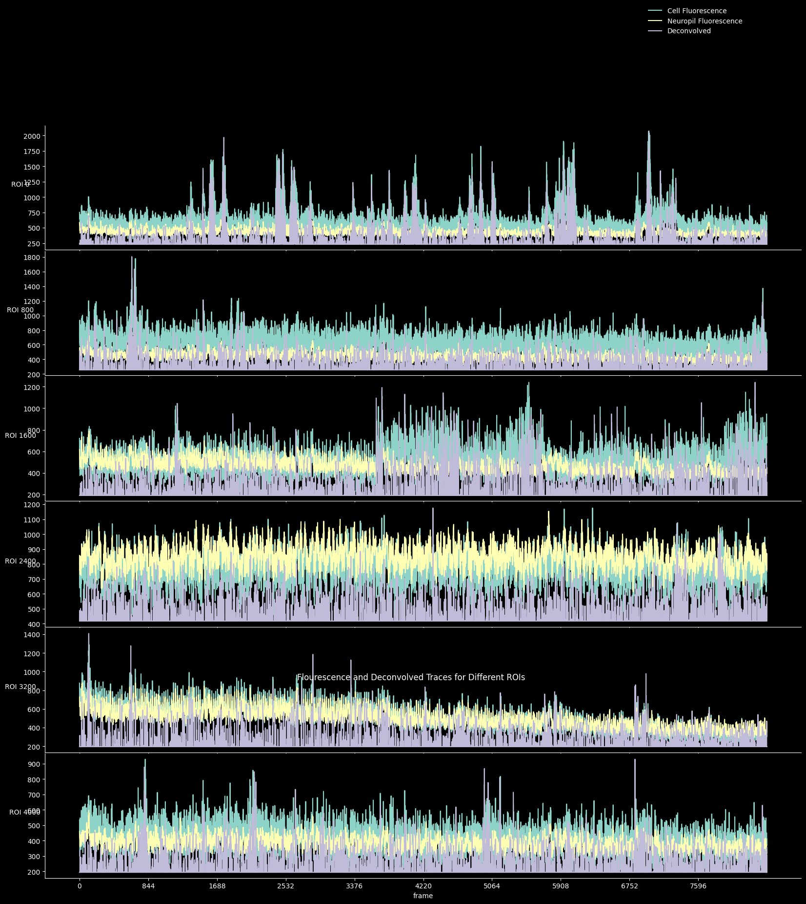

2. Suite2p Segmentation#
from pathlib import Path
import matplotlib.pyplot as plt
import numpy as np
import suite2p
import lbm_suite2p_python as lsp
import matplotlib as mpl
mpl.rcParams.update({
'axes.spines.left': True,
'axes.spines.bottom': True,
'axes.spines.top': False,
'axes.spines.right': False,
'legend.frameon': False,
'figure.subplot.wspace': .01,
'figure.subplot.hspace': .01,
'figure.figsize': (18, 13),
'ytick.major.left': True,
})
jet = mpl.cm.get_cmap('jet')
jet.set_bad(color='k')
C:\Users\RBO\AppData\Local\Temp\ipykernel_1956\1385736914.py:13: MatplotlibDeprecationWarning: The get_cmap function was deprecated in Matplotlib 3.7 and will be removed in 3.11. Use ``matplotlib.colormaps[name]`` or ``matplotlib.colormaps.get_cmap()`` or ``pyplot.get_cmap()`` instead.
jet = mpl.cm.get_cmap('jet')
parent_path = Path(r"E://datasets/single_hemisphere/zplanes")
files = [x for x in parent_path.glob('*.tif*')]
save_path = parent_path / 'all_zplanes'
db = {
'data_path': [str(parent_path)],
'save_path0': str(save_path),
'tiff_list': files,
}
db
{'data_path': ['E:\\datasets\\single_hemisphere\\zplanes'],
'save_path0': 'E:\\datasets\\single_hemisphere\\zplanes\\all_zplanes',
'tiff_list': [WindowsPath('E:/datasets/single_hemisphere/zplanes/plane_1.tiff'),
WindowsPath('E:/datasets/single_hemisphere/zplanes/plane_10.tiff'),
WindowsPath('E:/datasets/single_hemisphere/zplanes/plane_11.tiff'),
WindowsPath('E:/datasets/single_hemisphere/zplanes/plane_12.tiff'),
WindowsPath('E:/datasets/single_hemisphere/zplanes/plane_13.tiff'),
WindowsPath('E:/datasets/single_hemisphere/zplanes/plane_14.tiff'),
WindowsPath('E:/datasets/single_hemisphere/zplanes/plane_15.tiff'),
WindowsPath('E:/datasets/single_hemisphere/zplanes/plane_16.tiff'),
WindowsPath('E:/datasets/single_hemisphere/zplanes/plane_17.tiff'),
WindowsPath('E:/datasets/single_hemisphere/zplanes/plane_18.tiff'),
WindowsPath('E:/datasets/single_hemisphere/zplanes/plane_19.tiff'),
WindowsPath('E:/datasets/single_hemisphere/zplanes/plane_2.tiff'),
WindowsPath('E:/datasets/single_hemisphere/zplanes/plane_20.tiff'),
WindowsPath('E:/datasets/single_hemisphere/zplanes/plane_21.tiff'),
WindowsPath('E:/datasets/single_hemisphere/zplanes/plane_22.tiff'),
WindowsPath('E:/datasets/single_hemisphere/zplanes/plane_23.tiff'),
WindowsPath('E:/datasets/single_hemisphere/zplanes/plane_24.tiff'),
WindowsPath('E:/datasets/single_hemisphere/zplanes/plane_25.tiff'),
WindowsPath('E:/datasets/single_hemisphere/zplanes/plane_26.tiff'),
WindowsPath('E:/datasets/single_hemisphere/zplanes/plane_27.tiff'),
WindowsPath('E:/datasets/single_hemisphere/zplanes/plane_28.tiff'),
WindowsPath('E:/datasets/single_hemisphere/zplanes/plane_29.tiff'),
WindowsPath('E:/datasets/single_hemisphere/zplanes/plane_3.tiff'),
WindowsPath('E:/datasets/single_hemisphere/zplanes/plane_30.tiff'),
WindowsPath('E:/datasets/single_hemisphere/zplanes/plane_4.tiff'),
WindowsPath('E:/datasets/single_hemisphere/zplanes/plane_5.tiff'),
WindowsPath('E:/datasets/single_hemisphere/zplanes/plane_6.tiff'),
WindowsPath('E:/datasets/single_hemisphere/zplanes/plane_7.tiff'),
WindowsPath('E:/datasets/single_hemisphere/zplanes/plane_8.tiff'),
WindowsPath('E:/datasets/single_hemisphere/zplanes/plane_9.tiff')]}
ops = suite2p.default_ops()
metadata = lsp.get_metadata(files[0])
new_ops = lsp.ops_from_metadata(ops, metadata)
ops['nplanes'] = len(db['tiff_list'])
old_dy = ops['dy']
ops['dy'] = [ops['dy'] for i in range(ops['nplanes'])]
old_dx = ops['dx']
ops['dx'] = [ops['dx'] for i in range(ops['nplanes'])]
output_ops = suite2p.run_s2p(ops=ops, db=db)
{'data_path': ['E:\\datasets\\single_hemisphere\\zplanes'], 'save_path0': 'E:\\datasets\\single_hemisphere\\zplanes\\all_zplanes', 'tiff_list': [WindowsPath('E:/datasets/single_hemisphere/zplanes/plane_1.tiff'), WindowsPath('E:/datasets/single_hemisphere/zplanes/plane_10.tiff'), WindowsPath('E:/datasets/single_hemisphere/zplanes/plane_11.tiff'), WindowsPath('E:/datasets/single_hemisphere/zplanes/plane_12.tiff'), WindowsPath('E:/datasets/single_hemisphere/zplanes/plane_13.tiff'), WindowsPath('E:/datasets/single_hemisphere/zplanes/plane_14.tiff'), WindowsPath('E:/datasets/single_hemisphere/zplanes/plane_15.tiff'), WindowsPath('E:/datasets/single_hemisphere/zplanes/plane_16.tiff'), WindowsPath('E:/datasets/single_hemisphere/zplanes/plane_17.tiff'), WindowsPath('E:/datasets/single_hemisphere/zplanes/plane_18.tiff'), WindowsPath('E:/datasets/single_hemisphere/zplanes/plane_19.tiff'), WindowsPath('E:/datasets/single_hemisphere/zplanes/plane_2.tiff'), WindowsPath('E:/datasets/single_hemisphere/zplanes/plane_20.tiff'), WindowsPath('E:/datasets/single_hemisphere/zplanes/plane_21.tiff'), WindowsPath('E:/datasets/single_hemisphere/zplanes/plane_22.tiff'), WindowsPath('E:/datasets/single_hemisphere/zplanes/plane_23.tiff'), WindowsPath('E:/datasets/single_hemisphere/zplanes/plane_24.tiff'), WindowsPath('E:/datasets/single_hemisphere/zplanes/plane_25.tiff'), WindowsPath('E:/datasets/single_hemisphere/zplanes/plane_26.tiff'), WindowsPath('E:/datasets/single_hemisphere/zplanes/plane_27.tiff'), WindowsPath('E:/datasets/single_hemisphere/zplanes/plane_28.tiff'), WindowsPath('E:/datasets/single_hemisphere/zplanes/plane_29.tiff'), WindowsPath('E:/datasets/single_hemisphere/zplanes/plane_3.tiff'), WindowsPath('E:/datasets/single_hemisphere/zplanes/plane_30.tiff'), WindowsPath('E:/datasets/single_hemisphere/zplanes/plane_4.tiff'), WindowsPath('E:/datasets/single_hemisphere/zplanes/plane_5.tiff'), WindowsPath('E:/datasets/single_hemisphere/zplanes/plane_6.tiff'), WindowsPath('E:/datasets/single_hemisphere/zplanes/plane_7.tiff'), WindowsPath('E:/datasets/single_hemisphere/zplanes/plane_8.tiff'), WindowsPath('E:/datasets/single_hemisphere/zplanes/plane_9.tiff')]}
tif
** Found 30 tifs - converting to binary **
2040 frames of binary, time 5.07 sec.
4080 frames of binary, time 8.87 sec.
6120 frames of binary, time 12.89 sec.
8160 frames of binary, time 16.93 sec.
time 676.52 sec. Wrote 8440 frames per binary for 30 planes
>>>>>>>>>>>>>>>>>>>>> PLANE 0 <<<<<<<<<<<<<<<<<<<<<<
NOTE: not registered / registration forced with ops['do_registration']>1
(no previous offsets to delete)
NOTE: applying default C:\Users\RBO\.suite2p\classifiers\classifier_user.npy
----------- REGISTRATION
Reference frame, 16.96 sec.
Registered 500/8440 in 18.29s
Registered 1000/8440 in 36.28s
Registered 1500/8440 in 54.47s
Registered 2000/8440 in 72.58s
Registered 2500/8440 in 90.71s
Registered 3000/8440 in 108.76s
Registered 3500/8440 in 126.83s
Registered 4000/8440 in 144.94s
Registered 4500/8440 in 163.08s
Registered 5000/8440 in 181.05s
Registered 5500/8440 in 199.03s
Registered 6000/8440 in 217.14s
Registered 6500/8440 in 235.18s
Registered 7000/8440 in 252.96s
Registered 7500/8440 in 270.91s
Registered 8000/8440 in 288.66s
Registered 8440/8440 in 304.14s
----------- Total 332.09 sec
Registration metrics, 28.55 sec.
----------- ROI DETECTION
Binning movie in chunks of length 05
Binned movie of size [1688,976,616] created in 11.01 sec.
c:\Users\RBO\miniforge3\envs\lsp\lib\site-packages\suite2p\detection\sparsedetect.py:286: UserWarning: Spatial scale estimation failed. Setting spatial scale to 1 in order to continue.
warn(
NOTE: FORCED spatial scale ~6 pixels, time epochs 1.41, threshold 7.03
0 ROIs, score=217.55
1000 ROIs, score=32.74
2000 ROIs, score=23.25
3000 ROIs, score=18.86
4000 ROIs, score=16.29
Detected 5000 ROIs, 103.84 sec
After removing overlaps, 3173 ROIs remain
----------- Total 119.49 sec.
----------- EXTRACTION
Masks created, 5.37 sec.
Extracted fluorescence from 3173 ROIs in 8440 frames, 25.21 sec.
----------- Total 31.31 sec.
----------- CLASSIFICATION
['npix_norm', 'compact', 'skew']
----------- SPIKE DECONVOLUTION
----------- Total 0.68 sec.
Plane 0 processed in 512.69 sec (can open in GUI).
>>>>>>>>>>>>>>>>>>>>> PLANE 1 <<<<<<<<<<<<<<<<<<<<<<
NOTE: not registered / registration forced with ops['do_registration']>1
(no previous offsets to delete)
NOTE: applying default C:\Users\RBO\.suite2p\classifiers\classifier_user.npy
----------- REGISTRATION
Reference frame, 16.68 sec.
Registered 500/8440 in 18.13s
Registered 1000/8440 in 35.99s
Registered 1500/8440 in 53.78s
Registered 2000/8440 in 71.59s
Registered 2500/8440 in 89.57s
Registered 3000/8440 in 107.43s
Registered 3500/8440 in 125.37s
Registered 4000/8440 in 143.30s
Registered 4500/8440 in 161.36s
Registered 5000/8440 in 179.36s
Registered 5500/8440 in 197.35s
Registered 6000/8440 in 215.32s
Registered 6500/8440 in 233.26s
Registered 7000/8440 in 251.45s
Registered 7500/8440 in 269.24s
Registered 8000/8440 in 287.07s
Registered 8440/8440 in 302.48s
----------- Total 330.42 sec
Registration metrics, 27.72 sec.
----------- ROI DETECTION
Binning movie in chunks of length 05
Binned movie of size [1688,970,600] created in 10.71 sec.
c:\Users\RBO\miniforge3\envs\lsp\lib\site-packages\suite2p\detection\sparsedetect.py:286: UserWarning: Spatial scale estimation failed. Setting spatial scale to 1 in order to continue.
warn(
NOTE: FORCED spatial scale ~6 pixels, time epochs 1.41, threshold 7.03
0 ROIs, score=223.29
1000 ROIs, score=33.46
2000 ROIs, score=23.15
3000 ROIs, score=18.54
4000 ROIs, score=16.13
Detected 5000 ROIs, 106.71 sec
After removing overlaps, 3040 ROIs remain
----------- Total 122.06 sec.
----------- EXTRACTION
Masks created, 5.37 sec.
Extracted fluorescence from 3040 ROIs in 8440 frames, 24.38 sec.
----------- Total 30.45 sec.
----------- CLASSIFICATION
['npix_norm', 'compact', 'skew']
----------- SPIKE DECONVOLUTION
----------- Total 0.64 sec.
Plane 1 processed in 511.82 sec (can open in GUI).
>>>>>>>>>>>>>>>>>>>>> PLANE 2 <<<<<<<<<<<<<<<<<<<<<<
NOTE: not registered / registration forced with ops['do_registration']>1
(no previous offsets to delete)
NOTE: applying default C:\Users\RBO\.suite2p\classifiers\classifier_user.npy
----------- REGISTRATION
Reference frame, 16.45 sec.
Registered 500/8440 in 17.96s
Registered 1000/8440 in 35.95s
Registered 1500/8440 in 53.93s
Registered 2000/8440 in 72.09s
Registered 2500/8440 in 90.15s
Registered 3000/8440 in 107.96s
Registered 3500/8440 in 125.93s
Registered 4000/8440 in 143.88s
Registered 4500/8440 in 161.86s
Registered 5000/8440 in 179.81s
Registered 5500/8440 in 197.89s
Registered 6000/8440 in 215.89s
Registered 6500/8440 in 233.98s
Registered 7000/8440 in 251.91s
Registered 7500/8440 in 270.07s
Registered 8000/8440 in 288.06s
Registered 8440/8440 in 303.51s
----------- Total 331.02 sec
Registration metrics, 27.92 sec.
----------- ROI DETECTION
Binning movie in chunks of length 05
Binned movie of size [1688,968,600] created in 10.84 sec.
c:\Users\RBO\miniforge3\envs\lsp\lib\site-packages\suite2p\detection\sparsedetect.py:286: UserWarning: Spatial scale estimation failed. Setting spatial scale to 1 in order to continue.
warn(
NOTE: FORCED spatial scale ~6 pixels, time epochs 1.41, threshold 7.03
0 ROIs, score=222.25
1000 ROIs, score=33.15
2000 ROIs, score=22.99
3000 ROIs, score=18.37
4000 ROIs, score=15.87
Detected 5000 ROIs, 101.98 sec
After removing overlaps, 3082 ROIs remain
----------- Total 117.36 sec.
----------- EXTRACTION
Masks created, 5.37 sec.
Extracted fluorescence from 3082 ROIs in 8440 frames, 24.62 sec.
----------- Total 30.58 sec.
----------- CLASSIFICATION
['npix_norm', 'compact', 'skew']
----------- SPIKE DECONVOLUTION
----------- Total 0.65 sec.
Plane 2 processed in 507.96 sec (can open in GUI).
>>>>>>>>>>>>>>>>>>>>> PLANE 3 <<<<<<<<<<<<<<<<<<<<<<
NOTE: not registered / registration forced with ops['do_registration']>1
(no previous offsets to delete)
NOTE: applying default C:\Users\RBO\.suite2p\classifiers\classifier_user.npy
----------- REGISTRATION
Reference frame, 16.63 sec.
Registered 500/8440 in 17.73s
Registered 1000/8440 in 35.66s
Registered 1500/8440 in 53.66s
Registered 2000/8440 in 71.63s
Registered 2500/8440 in 89.67s
Registered 3000/8440 in 107.71s
Registered 3500/8440 in 125.57s
Registered 4000/8440 in 143.53s
Registered 4500/8440 in 161.43s
Registered 5000/8440 in 179.47s
Registered 5500/8440 in 197.37s
Registered 6000/8440 in 215.32s
Registered 6500/8440 in 233.16s
Registered 7000/8440 in 251.16s
Registered 7500/8440 in 269.02s
Registered 8000/8440 in 286.99s
Registered 8440/8440 in 302.52s
----------- Total 330.21 sec
Registration metrics, 25.17 sec.
----------- ROI DETECTION
Binning movie in chunks of length 05
Binned movie of size [1688,878,598] created in 10.17 sec.
c:\Users\RBO\miniforge3\envs\lsp\lib\site-packages\suite2p\detection\sparsedetect.py:286: UserWarning: Spatial scale estimation failed. Setting spatial scale to 1 in order to continue.
warn(
NOTE: FORCED spatial scale ~6 pixels, time epochs 1.41, threshold 7.03
0 ROIs, score=170.07
1000 ROIs, score=32.03
2000 ROIs, score=21.63
3000 ROIs, score=17.59
4000 ROIs, score=15.31
Detected 5000 ROIs, 96.33 sec
After removing overlaps, 2947 ROIs remain
----------- Total 111.00 sec.
----------- EXTRACTION
Masks created, 5.07 sec.
Extracted fluorescence from 2947 ROIs in 8440 frames, 23.63 sec.
----------- Total 29.33 sec.
----------- CLASSIFICATION
['npix_norm', 'compact', 'skew']
----------- SPIKE DECONVOLUTION
----------- Total 0.62 sec.
Plane 3 processed in 496.84 sec (can open in GUI).
>>>>>>>>>>>>>>>>>>>>> PLANE 4 <<<<<<<<<<<<<<<<<<<<<<
NOTE: not registered / registration forced with ops['do_registration']>1
(no previous offsets to delete)
NOTE: applying default C:\Users\RBO\.suite2p\classifiers\classifier_user.npy
----------- REGISTRATION
Reference frame, 16.57 sec.
Registered 500/8440 in 17.99s
Registered 1000/8440 in 35.93s
Registered 1500/8440 in 53.83s
Registered 2000/8440 in 71.80s
Registered 2500/8440 in 89.92s
Registered 3000/8440 in 107.74s
Registered 3500/8440 in 125.56s
Registered 4000/8440 in 143.45s
Registered 4500/8440 in 161.30s
Registered 5000/8440 in 179.33s
Registered 5500/8440 in 197.04s
Registered 6000/8440 in 215.19s
Registered 6500/8440 in 233.16s
Registered 7000/8440 in 251.10s
Registered 7500/8440 in 269.06s
Registered 8000/8440 in 286.95s
Registered 8440/8440 in 302.73s
----------- Total 330.36 sec
Registration metrics, 27.79 sec.
----------- ROI DETECTION
Binning movie in chunks of length 05
Binned movie of size [1688,968,598] created in 10.82 sec.
c:\Users\RBO\miniforge3\envs\lsp\lib\site-packages\suite2p\detection\sparsedetect.py:286: UserWarning: Spatial scale estimation failed. Setting spatial scale to 1 in order to continue.
warn(
NOTE: FORCED spatial scale ~6 pixels, time epochs 1.41, threshold 7.03
0 ROIs, score=231.31
1000 ROIs, score=33.23
2000 ROIs, score=23.13
3000 ROIs, score=18.46
4000 ROIs, score=15.80
Detected 5000 ROIs, 100.45 sec
After removing overlaps, 3053 ROIs remain
----------- Total 115.87 sec.
----------- EXTRACTION
Masks created, 5.34 sec.
Extracted fluorescence from 3053 ROIs in 8440 frames, 24.07 sec.
----------- Total 29.99 sec.
----------- CLASSIFICATION
['npix_norm', 'compact', 'skew']
----------- SPIKE DECONVOLUTION
----------- Total 0.65 sec.
Plane 4 processed in 505.09 sec (can open in GUI).
>>>>>>>>>>>>>>>>>>>>> PLANE 5 <<<<<<<<<<<<<<<<<<<<<<
NOTE: not registered / registration forced with ops['do_registration']>1
(no previous offsets to delete)
NOTE: applying default C:\Users\RBO\.suite2p\classifiers\classifier_user.npy
----------- REGISTRATION
Reference frame, 16.53 sec.
Registered 500/8440 in 17.88s
Registered 1000/8440 in 35.89s
Registered 1500/8440 in 54.02s
Registered 2000/8440 in 71.95s
Registered 2500/8440 in 90.03s
Registered 3000/8440 in 108.00s
Registered 3500/8440 in 125.98s
Registered 4000/8440 in 143.94s
Registered 4500/8440 in 161.91s
Registered 5000/8440 in 179.83s
Registered 5500/8440 in 197.63s
Registered 6000/8440 in 215.71s
Registered 6500/8440 in 233.70s
Registered 7000/8440 in 251.54s
Registered 7500/8440 in 269.39s
Registered 8000/8440 in 287.27s
Registered 8440/8440 in 302.93s
----------- Total 330.52 sec
Registration metrics, 27.76 sec.
----------- ROI DETECTION
Binning movie in chunks of length 05
Binned movie of size [1688,968,598] created in 10.72 sec.
c:\Users\RBO\miniforge3\envs\lsp\lib\site-packages\suite2p\detection\sparsedetect.py:286: UserWarning: Spatial scale estimation failed. Setting spatial scale to 1 in order to continue.
warn(
NOTE: FORCED spatial scale ~6 pixels, time epochs 1.41, threshold 7.03
0 ROIs, score=227.99
1000 ROIs, score=33.46
2000 ROIs, score=22.90
3000 ROIs, score=18.52
4000 ROIs, score=15.95
Detected 5000 ROIs, 100.97 sec
After removing overlaps, 3027 ROIs remain
----------- Total 116.26 sec.
----------- EXTRACTION
Masks created, 5.26 sec.
Extracted fluorescence from 3027 ROIs in 8440 frames, 24.36 sec.
----------- Total 30.32 sec.
----------- CLASSIFICATION
['npix_norm', 'compact', 'skew']
----------- SPIKE DECONVOLUTION
----------- Total 0.62 sec.
Plane 5 processed in 505.89 sec (can open in GUI).
>>>>>>>>>>>>>>>>>>>>> PLANE 6 <<<<<<<<<<<<<<<<<<<<<<
NOTE: not registered / registration forced with ops['do_registration']>1
(no previous offsets to delete)
NOTE: applying default C:\Users\RBO\.suite2p\classifiers\classifier_user.npy
----------- REGISTRATION
Reference frame, 16.63 sec.
Registered 500/8440 in 17.84s
Registered 1000/8440 in 35.86s
Registered 1500/8440 in 53.90s
Registered 2000/8440 in 71.89s
Registered 2500/8440 in 89.77s
Registered 3000/8440 in 107.55s
Registered 3500/8440 in 125.42s
Registered 4000/8440 in 143.34s
Registered 4500/8440 in 161.58s
Registered 5000/8440 in 179.40s
Registered 5500/8440 in 197.50s
Registered 6000/8440 in 215.36s
Registered 6500/8440 in 233.39s
Registered 7000/8440 in 251.50s
Registered 7500/8440 in 269.43s
Registered 8000/8440 in 287.42s
Registered 8440/8440 in 303.11s
----------- Total 330.87 sec
Registration metrics, 28.08 sec.
----------- ROI DETECTION
Binning movie in chunks of length 05
Binned movie of size [1688,970,604] created in 10.87 sec.
c:\Users\RBO\miniforge3\envs\lsp\lib\site-packages\suite2p\detection\sparsedetect.py:286: UserWarning: Spatial scale estimation failed. Setting spatial scale to 1 in order to continue.
warn(
NOTE: FORCED spatial scale ~6 pixels, time epochs 1.41, threshold 7.03
0 ROIs, score=227.99
1000 ROIs, score=33.22
2000 ROIs, score=22.88
3000 ROIs, score=18.48
4000 ROIs, score=15.96
Detected 5000 ROIs, 101.19 sec
After removing overlaps, 3022 ROIs remain
----------- Total 116.64 sec.
----------- EXTRACTION
Masks created, 5.28 sec.
Extracted fluorescence from 3022 ROIs in 8440 frames, 24.03 sec.
----------- Total 29.99 sec.
----------- CLASSIFICATION
['npix_norm', 'compact', 'skew']
----------- SPIKE DECONVOLUTION
----------- Total 0.65 sec.
Plane 6 processed in 506.76 sec (can open in GUI).
>>>>>>>>>>>>>>>>>>>>> PLANE 7 <<<<<<<<<<<<<<<<<<<<<<
NOTE: not registered / registration forced with ops['do_registration']>1
(no previous offsets to delete)
NOTE: applying default C:\Users\RBO\.suite2p\classifiers\classifier_user.npy
----------- REGISTRATION
Reference frame, 16.52 sec.
Registered 500/8440 in 18.03s
Registered 1000/8440 in 36.04s
Registered 1500/8440 in 54.14s
Registered 2000/8440 in 72.12s
Registered 2500/8440 in 90.16s
Registered 3000/8440 in 108.00s
Registered 3500/8440 in 126.04s
Registered 4000/8440 in 143.97s
Registered 4500/8440 in 161.87s
Registered 5000/8440 in 179.97s
Registered 5500/8440 in 198.16s
Registered 6000/8440 in 216.18s
Registered 6500/8440 in 234.08s
Registered 7000/8440 in 252.15s
Registered 7500/8440 in 270.05s
Registered 8000/8440 in 288.21s
Registered 8440/8440 in 303.92s
----------- Total 331.51 sec
Registration metrics, 28.19 sec.
----------- ROI DETECTION
Binning movie in chunks of length 05
Binned movie of size [1688,970,608] created in 10.72 sec.
c:\Users\RBO\miniforge3\envs\lsp\lib\site-packages\suite2p\detection\sparsedetect.py:286: UserWarning: Spatial scale estimation failed. Setting spatial scale to 1 in order to continue.
warn(
NOTE: FORCED spatial scale ~6 pixels, time epochs 1.41, threshold 7.03
0 ROIs, score=220.84
1000 ROIs, score=32.38
2000 ROIs, score=23.25
3000 ROIs, score=18.80
4000 ROIs, score=16.30
Detected 5000 ROIs, 97.93 sec
After removing overlaps, 3166 ROIs remain
----------- Total 113.34 sec.
----------- EXTRACTION
Masks created, 5.29 sec.
Extracted fluorescence from 3166 ROIs in 8440 frames, 24.30 sec.
----------- Total 30.19 sec.
----------- CLASSIFICATION
['npix_norm', 'compact', 'skew']
----------- SPIKE DECONVOLUTION
----------- Total 0.65 sec.
Plane 7 processed in 504.32 sec (can open in GUI).
>>>>>>>>>>>>>>>>>>>>> PLANE 8 <<<<<<<<<<<<<<<<<<<<<<
NOTE: not registered / registration forced with ops['do_registration']>1
(no previous offsets to delete)
NOTE: applying default C:\Users\RBO\.suite2p\classifiers\classifier_user.npy
----------- REGISTRATION
Reference frame, 16.60 sec.
Registered 500/8440 in 17.99s
Registered 1000/8440 in 35.97s
Registered 1500/8440 in 53.79s
Registered 2000/8440 in 71.71s
Registered 2500/8440 in 89.83s
Registered 3000/8440 in 107.71s
Registered 3500/8440 in 125.64s
Registered 4000/8440 in 143.60s
Registered 4500/8440 in 161.74s
Registered 5000/8440 in 179.90s
Registered 5500/8440 in 197.91s
Registered 6000/8440 in 215.78s
Registered 6500/8440 in 233.89s
Registered 7000/8440 in 251.83s
Registered 7500/8440 in 269.75s
Registered 8000/8440 in 287.69s
Registered 8440/8440 in 303.44s
----------- Total 331.12 sec
Registration metrics, 27.68 sec.
----------- ROI DETECTION
Binning movie in chunks of length 05
Binned movie of size [1688,966,602] created in 10.73 sec.
c:\Users\RBO\miniforge3\envs\lsp\lib\site-packages\suite2p\detection\sparsedetect.py:286: UserWarning: Spatial scale estimation failed. Setting spatial scale to 1 in order to continue.
warn(
NOTE: FORCED spatial scale ~6 pixels, time epochs 1.41, threshold 7.03
0 ROIs, score=227.09
1000 ROIs, score=34.02
2000 ROIs, score=23.31
3000 ROIs, score=18.70
4000 ROIs, score=16.10
Detected 5000 ROIs, 101.48 sec
After removing overlaps, 3064 ROIs remain
----------- Total 116.81 sec.
----------- EXTRACTION
Masks created, 5.39 sec.
Extracted fluorescence from 3064 ROIs in 8440 frames, 24.08 sec.
----------- Total 30.08 sec.
----------- CLASSIFICATION
['npix_norm', 'compact', 'skew']
----------- SPIKE DECONVOLUTION
----------- Total 0.64 sec.
Plane 8 processed in 506.86 sec (can open in GUI).
>>>>>>>>>>>>>>>>>>>>> PLANE 9 <<<<<<<<<<<<<<<<<<<<<<
NOTE: not registered / registration forced with ops['do_registration']>1
(no previous offsets to delete)
NOTE: applying default C:\Users\RBO\.suite2p\classifiers\classifier_user.npy
----------- REGISTRATION
Reference frame, 16.64 sec.
Registered 500/8440 in 17.89s
Registered 1000/8440 in 35.90s
Registered 1500/8440 in 53.79s
Registered 2000/8440 in 71.90s
Registered 2500/8440 in 90.05s
Registered 3000/8440 in 108.02s
Registered 3500/8440 in 126.07s
Registered 4000/8440 in 144.02s
Registered 4500/8440 in 162.01s
Registered 5000/8440 in 180.02s
Registered 5500/8440 in 198.12s
Registered 6000/8440 in 216.16s
Registered 6500/8440 in 233.95s
Registered 7000/8440 in 252.01s
Registered 7500/8440 in 270.01s
Registered 8000/8440 in 287.98s
Registered 8440/8440 in 303.76s
----------- Total 331.45 sec
Registration metrics, 27.96 sec.
----------- ROI DETECTION
Binning movie in chunks of length 05
Binned movie of size [1688,970,604] created in 10.77 sec.
c:\Users\RBO\miniforge3\envs\lsp\lib\site-packages\suite2p\detection\sparsedetect.py:286: UserWarning: Spatial scale estimation failed. Setting spatial scale to 1 in order to continue.
warn(
NOTE: FORCED spatial scale ~6 pixels, time epochs 1.41, threshold 7.03
0 ROIs, score=233.75
1000 ROIs, score=33.44
2000 ROIs, score=23.11
3000 ROIs, score=18.48
4000 ROIs, score=16.09
Detected 5000 ROIs, 101.07 sec
After removing overlaps, 2991 ROIs remain
----------- Total 116.44 sec.
----------- EXTRACTION
Masks created, 5.23 sec.
Extracted fluorescence from 2991 ROIs in 8440 frames, 23.99 sec.
----------- Total 29.79 sec.
----------- CLASSIFICATION
['npix_norm', 'compact', 'skew']
----------- SPIKE DECONVOLUTION
----------- Total 0.66 sec.
Plane 9 processed in 506.78 sec (can open in GUI).
>>>>>>>>>>>>>>>>>>>>> PLANE 10 <<<<<<<<<<<<<<<<<<<<<<
NOTE: not registered / registration forced with ops['do_registration']>1
(no previous offsets to delete)
NOTE: applying default C:\Users\RBO\.suite2p\classifiers\classifier_user.npy
----------- REGISTRATION
Reference frame, 16.60 sec.
Registered 500/8440 in 18.46s
Registered 1000/8440 in 36.35s
Registered 1500/8440 in 54.35s
Registered 2000/8440 in 72.30s
Registered 2500/8440 in 90.46s
Registered 3000/8440 in 108.30s
Registered 3500/8440 in 126.22s
Registered 4000/8440 in 144.14s
Registered 4500/8440 in 162.25s
Registered 5000/8440 in 180.33s
Registered 5500/8440 in 198.25s
Registered 6000/8440 in 216.27s
Registered 6500/8440 in 234.42s
Registered 7000/8440 in 252.45s
Registered 7500/8440 in 270.54s
Registered 8000/8440 in 288.44s
Registered 8440/8440 in 304.22s
----------- Total 331.89 sec
Registration metrics, 27.75 sec.
----------- ROI DETECTION
Binning movie in chunks of length 05
Binned movie of size [1688,968,602] created in 10.75 sec.
c:\Users\RBO\miniforge3\envs\lsp\lib\site-packages\suite2p\detection\sparsedetect.py:286: UserWarning: Spatial scale estimation failed. Setting spatial scale to 1 in order to continue.
warn(
NOTE: FORCED spatial scale ~6 pixels, time epochs 1.41, threshold 7.03
0 ROIs, score=220.37
1000 ROIs, score=33.17
2000 ROIs, score=23.09
3000 ROIs, score=18.44
4000 ROIs, score=16.02
Detected 5000 ROIs, 100.40 sec
After removing overlaps, 3015 ROIs remain
----------- Total 115.72 sec.
----------- EXTRACTION
Masks created, 5.24 sec.
Extracted fluorescence from 3015 ROIs in 8440 frames, 23.95 sec.
----------- Total 29.78 sec.
----------- CLASSIFICATION
['npix_norm', 'compact', 'skew']
----------- SPIKE DECONVOLUTION
----------- Total 0.64 sec.
Plane 10 processed in 506.18 sec (can open in GUI).
>>>>>>>>>>>>>>>>>>>>> PLANE 11 <<<<<<<<<<<<<<<<<<<<<<
NOTE: not registered / registration forced with ops['do_registration']>1
(no previous offsets to delete)
NOTE: applying default C:\Users\RBO\.suite2p\classifiers\classifier_user.npy
----------- REGISTRATION
Reference frame, 16.49 sec.
Registered 500/8440 in 18.29s
Registered 1000/8440 in 36.23s
Registered 1500/8440 in 54.23s
Registered 2000/8440 in 72.19s
Registered 2500/8440 in 90.17s
Registered 3000/8440 in 108.15s
Registered 3500/8440 in 126.05s
Registered 4000/8440 in 144.09s
Registered 4500/8440 in 162.04s
Registered 5000/8440 in 180.07s
Registered 5500/8440 in 198.23s
Registered 6000/8440 in 216.37s
Registered 6500/8440 in 234.45s
Registered 7000/8440 in 252.58s
Registered 7500/8440 in 270.57s
Registered 8000/8440 in 288.60s
Registered 8440/8440 in 304.38s
----------- Total 331.92 sec
Registration metrics, 27.68 sec.
----------- ROI DETECTION
Binning movie in chunks of length 05
Binned movie of size [1688,968,598] created in 10.74 sec.
c:\Users\RBO\miniforge3\envs\lsp\lib\site-packages\suite2p\detection\sparsedetect.py:286: UserWarning: Spatial scale estimation failed. Setting spatial scale to 1 in order to continue.
warn(
NOTE: FORCED spatial scale ~6 pixels, time epochs 1.41, threshold 7.03
0 ROIs, score=227.03
1000 ROIs, score=33.73
2000 ROIs, score=23.23
3000 ROIs, score=18.60
4000 ROIs, score=16.09
Detected 5000 ROIs, 101.56 sec
After removing overlaps, 3020 ROIs remain
----------- Total 116.91 sec.
----------- EXTRACTION
Masks created, 5.40 sec.
Extracted fluorescence from 3020 ROIs in 8440 frames, 23.80 sec.
----------- Total 29.77 sec.
----------- CLASSIFICATION
['npix_norm', 'compact', 'skew']
----------- SPIKE DECONVOLUTION
----------- Total 0.63 sec.
Plane 11 processed in 507.34 sec (can open in GUI).
>>>>>>>>>>>>>>>>>>>>> PLANE 12 <<<<<<<<<<<<<<<<<<<<<<
NOTE: not registered / registration forced with ops['do_registration']>1
(no previous offsets to delete)
NOTE: applying default C:\Users\RBO\.suite2p\classifiers\classifier_user.npy
----------- REGISTRATION
Reference frame, 16.85 sec.
Registered 500/8440 in 18.08s
Registered 1000/8440 in 35.92s
Registered 1500/8440 in 53.90s
Registered 2000/8440 in 71.71s
Registered 2500/8440 in 89.68s
Registered 3000/8440 in 107.57s
Registered 3500/8440 in 125.61s
Registered 4000/8440 in 143.74s
Registered 4500/8440 in 161.90s
Registered 5000/8440 in 179.91s
Registered 5500/8440 in 197.84s
Registered 6000/8440 in 215.90s
Registered 6500/8440 in 233.85s
Registered 7000/8440 in 251.96s
Registered 7500/8440 in 269.86s
Registered 8000/8440 in 287.86s
Registered 8440/8440 in 303.66s
----------- Total 331.63 sec
Registration metrics, 27.35 sec.
----------- ROI DETECTION
Binning movie in chunks of length 05
Binned movie of size [1688,968,594] created in 10.69 sec.
c:\Users\RBO\miniforge3\envs\lsp\lib\site-packages\suite2p\detection\sparsedetect.py:286: UserWarning: Spatial scale estimation failed. Setting spatial scale to 1 in order to continue.
warn(
NOTE: FORCED spatial scale ~6 pixels, time epochs 1.41, threshold 7.03
0 ROIs, score=240.66
1000 ROIs, score=33.24
2000 ROIs, score=22.96
3000 ROIs, score=18.47
4000 ROIs, score=15.98
Detected 5000 ROIs, 102.33 sec
After removing overlaps, 3048 ROIs remain
----------- Total 117.60 sec.
----------- EXTRACTION
Masks created, 5.29 sec.
Extracted fluorescence from 3048 ROIs in 8440 frames, 24.34 sec.
----------- Total 30.20 sec.
----------- CLASSIFICATION
['npix_norm', 'compact', 'skew']
----------- SPIKE DECONVOLUTION
----------- Total 0.64 sec.
Plane 12 processed in 507.90 sec (can open in GUI).
>>>>>>>>>>>>>>>>>>>>> PLANE 13 <<<<<<<<<<<<<<<<<<<<<<
NOTE: not registered / registration forced with ops['do_registration']>1
(no previous offsets to delete)
NOTE: applying default C:\Users\RBO\.suite2p\classifiers\classifier_user.npy
----------- REGISTRATION
Reference frame, 16.91 sec.
Registered 500/8440 in 17.83s
Registered 1000/8440 in 35.86s
Registered 1500/8440 in 53.77s
Registered 2000/8440 in 71.77s
Registered 2500/8440 in 89.83s
Registered 3000/8440 in 107.95s
Registered 3500/8440 in 125.89s
Registered 4000/8440 in 144.05s
Registered 4500/8440 in 162.01s
Registered 5000/8440 in 179.93s
Registered 5500/8440 in 197.96s
Registered 6000/8440 in 216.04s
Registered 6500/8440 in 233.89s
Registered 7000/8440 in 252.05s
Registered 7500/8440 in 270.00s
Registered 8000/8440 in 287.85s
Registered 8440/8440 in 303.66s
----------- Total 331.66 sec
Registration metrics, 28.07 sec.
----------- ROI DETECTION
Binning movie in chunks of length 05
Binned movie of size [1688,970,604] created in 10.75 sec.
c:\Users\RBO\miniforge3\envs\lsp\lib\site-packages\suite2p\detection\sparsedetect.py:286: UserWarning: Spatial scale estimation failed. Setting spatial scale to 1 in order to continue.
warn(
NOTE: FORCED spatial scale ~6 pixels, time epochs 1.41, threshold 7.03
0 ROIs, score=229.48
1000 ROIs, score=33.60
2000 ROIs, score=23.22
3000 ROIs, score=18.55
4000 ROIs, score=16.05
Detected 5000 ROIs, 101.63 sec
After removing overlaps, 3024 ROIs remain
----------- Total 116.97 sec.
----------- EXTRACTION
Masks created, 5.40 sec.
Extracted fluorescence from 3024 ROIs in 8440 frames, 24.34 sec.
----------- Total 30.32 sec.
----------- CLASSIFICATION
['npix_norm', 'compact', 'skew']
----------- SPIKE DECONVOLUTION
----------- Total 0.67 sec.
Plane 13 processed in 508.11 sec (can open in GUI).
>>>>>>>>>>>>>>>>>>>>> PLANE 14 <<<<<<<<<<<<<<<<<<<<<<
NOTE: not registered / registration forced with ops['do_registration']>1
(no previous offsets to delete)
NOTE: applying default C:\Users\RBO\.suite2p\classifiers\classifier_user.npy
----------- REGISTRATION
Reference frame, 16.68 sec.
Registered 500/8440 in 18.24s
Registered 1000/8440 in 36.13s
Registered 1500/8440 in 54.15s
Registered 2000/8440 in 72.28s
Registered 2500/8440 in 90.32s
Registered 3000/8440 in 108.21s
Registered 3500/8440 in 126.36s
Registered 4000/8440 in 144.15s
Registered 4500/8440 in 162.06s
Registered 5000/8440 in 180.13s
Registered 5500/8440 in 198.29s
Registered 6000/8440 in 216.17s
Registered 6500/8440 in 234.34s
Registered 7000/8440 in 252.36s
Registered 7500/8440 in 270.18s
Registered 8000/8440 in 288.14s
Registered 8440/8440 in 303.96s
----------- Total 331.70 sec
Registration metrics, 27.13 sec.
----------- ROI DETECTION
Binning movie in chunks of length 05
Binned movie of size [1688,962,596] created in 10.63 sec.
c:\Users\RBO\miniforge3\envs\lsp\lib\site-packages\suite2p\detection\sparsedetect.py:286: UserWarning: Spatial scale estimation failed. Setting spatial scale to 1 in order to continue.
warn(
NOTE: FORCED spatial scale ~6 pixels, time epochs 1.41, threshold 7.03
0 ROIs, score=238.75
1000 ROIs, score=33.04
2000 ROIs, score=23.01
3000 ROIs, score=18.49
4000 ROIs, score=15.91
Detected 5000 ROIs, 100.90 sec
After removing overlaps, 3045 ROIs remain
----------- Total 116.09 sec.
----------- EXTRACTION
Masks created, 5.25 sec.
Extracted fluorescence from 3045 ROIs in 8440 frames, 24.32 sec.
----------- Total 30.25 sec.
----------- CLASSIFICATION
['npix_norm', 'compact', 'skew']
----------- SPIKE DECONVOLUTION
----------- Total 0.68 sec.
Plane 14 processed in 506.46 sec (can open in GUI).
>>>>>>>>>>>>>>>>>>>>> PLANE 15 <<<<<<<<<<<<<<<<<<<<<<
NOTE: not registered / registration forced with ops['do_registration']>1
(no previous offsets to delete)
NOTE: applying default C:\Users\RBO\.suite2p\classifiers\classifier_user.npy
----------- REGISTRATION
Reference frame, 16.60 sec.
Registered 500/8440 in 17.99s
Registered 1000/8440 in 35.99s
Registered 1500/8440 in 53.99s
Registered 2000/8440 in 71.96s
Registered 2500/8440 in 90.16s
Registered 3000/8440 in 108.23s
Registered 3500/8440 in 126.15s
Registered 4000/8440 in 144.14s
Registered 4500/8440 in 162.11s
Registered 5000/8440 in 180.03s
Registered 5500/8440 in 198.05s
Registered 6000/8440 in 216.07s
Registered 6500/8440 in 234.12s
Registered 7000/8440 in 252.17s
Registered 7500/8440 in 270.13s
Registered 8000/8440 in 288.14s
Registered 8440/8440 in 303.68s
----------- Total 331.35 sec
Registration metrics, 27.19 sec.
----------- ROI DETECTION
Binning movie in chunks of length 05
Binned movie of size [1688,960,594] created in 10.71 sec.
c:\Users\RBO\miniforge3\envs\lsp\lib\site-packages\suite2p\detection\sparsedetect.py:286: UserWarning: Spatial scale estimation failed. Setting spatial scale to 1 in order to continue.
warn(
NOTE: FORCED spatial scale ~6 pixels, time epochs 1.41, threshold 7.03
0 ROIs, score=238.45
1000 ROIs, score=33.06
2000 ROIs, score=22.66
3000 ROIs, score=18.43
4000 ROIs, score=15.83
Detected 5000 ROIs, 106.41 sec
After removing overlaps, 2996 ROIs remain
----------- Total 121.81 sec.
----------- EXTRACTION
Masks created, 5.28 sec.
Extracted fluorescence from 2996 ROIs in 8440 frames, 24.48 sec.
----------- Total 30.33 sec.
----------- CLASSIFICATION
['npix_norm', 'compact', 'skew']
----------- SPIKE DECONVOLUTION
----------- Total 0.62 sec.
Plane 15 processed in 511.71 sec (can open in GUI).
>>>>>>>>>>>>>>>>>>>>> PLANE 16 <<<<<<<<<<<<<<<<<<<<<<
NOTE: not registered / registration forced with ops['do_registration']>1
(no previous offsets to delete)
NOTE: applying default C:\Users\RBO\.suite2p\classifiers\classifier_user.npy
----------- REGISTRATION
Reference frame, 16.62 sec.
Registered 500/8440 in 18.21s
Registered 1000/8440 in 36.26s
Registered 1500/8440 in 54.24s
Registered 2000/8440 in 72.16s
Registered 2500/8440 in 90.31s
Registered 3000/8440 in 108.39s
Registered 3500/8440 in 126.39s
Registered 4000/8440 in 144.27s
Registered 4500/8440 in 162.32s
Registered 5000/8440 in 180.46s
Registered 5500/8440 in 198.46s
Registered 6000/8440 in 216.61s
Registered 6500/8440 in 234.66s
Registered 7000/8440 in 252.58s
Registered 7500/8440 in 270.77s
Registered 8000/8440 in 288.62s
Registered 8440/8440 in 304.43s
----------- Total 332.07 sec
Registration metrics, 28.42 sec.
----------- ROI DETECTION
Binning movie in chunks of length 05
Binned movie of size [1688,968,604] created in 11.11 sec.
c:\Users\RBO\miniforge3\envs\lsp\lib\site-packages\suite2p\detection\sparsedetect.py:286: UserWarning: Spatial scale estimation failed. Setting spatial scale to 1 in order to continue.
warn(
NOTE: FORCED spatial scale ~6 pixels, time epochs 1.41, threshold 7.03
0 ROIs, score=222.27
1000 ROIs, score=33.85
2000 ROIs, score=23.15
3000 ROIs, score=18.63
4000 ROIs, score=16.17
Detected 5000 ROIs, 107.17 sec
After removing overlaps, 3045 ROIs remain
----------- Total 123.91 sec.
----------- EXTRACTION
Masks created, 5.56 sec.
Extracted fluorescence from 3045 ROIs in 8440 frames, 28.38 sec.
----------- Total 40.39 sec.
----------- CLASSIFICATION
['npix_norm', 'compact', 'skew']
----------- SPIKE DECONVOLUTION
----------- Total 0.66 sec.
Plane 16 processed in 525.87 sec (can open in GUI).
>>>>>>>>>>>>>>>>>>>>> PLANE 17 <<<<<<<<<<<<<<<<<<<<<<
NOTE: not registered / registration forced with ops['do_registration']>1
(no previous offsets to delete)
NOTE: applying default C:\Users\RBO\.suite2p\classifiers\classifier_user.npy
----------- REGISTRATION
Reference frame, 16.76 sec.
Registered 500/8440 in 18.20s
Registered 1000/8440 in 36.40s
Registered 1500/8440 in 54.67s
Registered 2000/8440 in 72.94s
Registered 2500/8440 in 91.17s
Registered 3000/8440 in 109.01s
Registered 3500/8440 in 126.88s
Registered 4000/8440 in 144.86s
Registered 4500/8440 in 162.88s
Registered 5000/8440 in 180.76s
Registered 5500/8440 in 198.94s
Registered 6000/8440 in 217.01s
Registered 6500/8440 in 234.91s
Registered 7000/8440 in 253.02s
Registered 7500/8440 in 271.01s
Registered 8000/8440 in 288.79s
Registered 8440/8440 in 304.73s
----------- Total 332.59 sec
Registration metrics, 28.20 sec.
----------- ROI DETECTION
Binning movie in chunks of length 05
Binned movie of size [1688,974,604] created in 10.81 sec.
c:\Users\RBO\miniforge3\envs\lsp\lib\site-packages\suite2p\detection\sparsedetect.py:286: UserWarning: Spatial scale estimation failed. Setting spatial scale to 1 in order to continue.
warn(
NOTE: FORCED spatial scale ~6 pixels, time epochs 1.41, threshold 7.03
0 ROIs, score=234.06
1000 ROIs, score=33.76
2000 ROIs, score=23.35
3000 ROIs, score=18.63
4000 ROIs, score=16.23
Detected 5000 ROIs, 105.18 sec
After removing overlaps, 3032 ROIs remain
----------- Total 120.67 sec.
----------- EXTRACTION
Masks created, 5.42 sec.
Extracted fluorescence from 3032 ROIs in 8440 frames, 24.27 sec.
----------- Total 30.37 sec.
----------- CLASSIFICATION
['npix_norm', 'compact', 'skew']
----------- SPIKE DECONVOLUTION
----------- Total 0.63 sec.
Plane 17 processed in 512.91 sec (can open in GUI).
>>>>>>>>>>>>>>>>>>>>> PLANE 18 <<<<<<<<<<<<<<<<<<<<<<
NOTE: not registered / registration forced with ops['do_registration']>1
(no previous offsets to delete)
NOTE: applying default C:\Users\RBO\.suite2p\classifiers\classifier_user.npy
----------- REGISTRATION
Reference frame, 16.67 sec.
Registered 500/8440 in 18.42s
Registered 1000/8440 in 36.42s
Registered 1500/8440 in 54.58s
Registered 2000/8440 in 72.51s
Registered 2500/8440 in 90.41s
Registered 3000/8440 in 108.52s
Registered 3500/8440 in 126.40s
Registered 4000/8440 in 144.40s
Registered 4500/8440 in 162.39s
Registered 5000/8440 in 180.27s
Registered 5500/8440 in 198.40s
Registered 6000/8440 in 216.38s
Registered 6500/8440 in 234.40s
Registered 7000/8440 in 252.51s
Registered 7500/8440 in 270.60s
Registered 8000/8440 in 288.50s
Registered 8440/8440 in 304.53s
----------- Total 332.39 sec
Registration metrics, 27.78 sec.
----------- ROI DETECTION
Binning movie in chunks of length 05
Binned movie of size [1688,966,596] created in 10.89 sec.
c:\Users\RBO\miniforge3\envs\lsp\lib\site-packages\suite2p\detection\sparsedetect.py:286: UserWarning: Spatial scale estimation failed. Setting spatial scale to 1 in order to continue.
warn(
NOTE: FORCED spatial scale ~6 pixels, time epochs 1.41, threshold 7.03
0 ROIs, score=228.92
1000 ROIs, score=33.08
2000 ROIs, score=22.81
3000 ROIs, score=18.44
4000 ROIs, score=15.95
Detected 5000 ROIs, 100.24 sec
After removing overlaps, 3078 ROIs remain
----------- Total 115.78 sec.
----------- EXTRACTION
Masks created, 5.38 sec.
Extracted fluorescence from 3078 ROIs in 8440 frames, 24.72 sec.
----------- Total 30.67 sec.
----------- CLASSIFICATION
['npix_norm', 'compact', 'skew']
----------- SPIKE DECONVOLUTION
----------- Total 0.70 sec.
Plane 18 processed in 507.72 sec (can open in GUI).
>>>>>>>>>>>>>>>>>>>>> PLANE 19 <<<<<<<<<<<<<<<<<<<<<<
NOTE: not registered / registration forced with ops['do_registration']>1
(no previous offsets to delete)
NOTE: applying default C:\Users\RBO\.suite2p\classifiers\classifier_user.npy
----------- REGISTRATION
Reference frame, 16.90 sec.
Registered 500/8440 in 19.49s
Registered 1000/8440 in 37.78s
Registered 1500/8440 in 55.75s
Registered 2000/8440 in 73.81s
Registered 2500/8440 in 91.85s
Registered 3000/8440 in 109.96s
Registered 3500/8440 in 127.95s
Registered 4000/8440 in 145.96s
Registered 4500/8440 in 164.13s
Registered 5000/8440 in 182.25s
Registered 5500/8440 in 200.42s
Registered 6000/8440 in 218.56s
Registered 6500/8440 in 236.70s
Registered 7000/8440 in 254.83s
Registered 7500/8440 in 272.96s
Registered 8000/8440 in 290.84s
Registered 8440/8440 in 306.73s
----------- Total 334.75 sec
Registration metrics, 28.11 sec.
----------- ROI DETECTION
Binning movie in chunks of length 05
Binned movie of size [1688,968,598] created in 10.89 sec.
c:\Users\RBO\miniforge3\envs\lsp\lib\site-packages\suite2p\detection\sparsedetect.py:286: UserWarning: Spatial scale estimation failed. Setting spatial scale to 1 in order to continue.
warn(
NOTE: FORCED spatial scale ~6 pixels, time epochs 1.41, threshold 7.03
0 ROIs, score=247.28
1000 ROIs, score=33.77
2000 ROIs, score=23.09
3000 ROIs, score=18.49
4000 ROIs, score=15.96
Detected 5000 ROIs, 103.87 sec
After removing overlaps, 3033 ROIs remain
----------- Total 119.44 sec.
----------- EXTRACTION
Masks created, 5.40 sec.
Extracted fluorescence from 3033 ROIs in 8440 frames, 24.17 sec.
----------- Total 30.39 sec.
----------- CLASSIFICATION
['npix_norm', 'compact', 'skew']
----------- SPIKE DECONVOLUTION
----------- Total 0.65 sec.
Plane 19 processed in 514.02 sec (can open in GUI).
>>>>>>>>>>>>>>>>>>>>> PLANE 20 <<<<<<<<<<<<<<<<<<<<<<
NOTE: not registered / registration forced with ops['do_registration']>1
(no previous offsets to delete)
NOTE: applying default C:\Users\RBO\.suite2p\classifiers\classifier_user.npy
----------- REGISTRATION
Reference frame, 17.18 sec.
Registered 500/8440 in 19.44s
Registered 1000/8440 in 37.90s
Registered 1500/8440 in 56.74s
Registered 2000/8440 in 74.92s
Registered 2500/8440 in 93.13s
Registered 3000/8440 in 111.20s
Registered 3500/8440 in 129.35s
Registered 4000/8440 in 147.43s
Registered 4500/8440 in 165.38s
Registered 5000/8440 in 183.32s
Registered 5500/8440 in 201.18s
Registered 6000/8440 in 219.40s
Registered 6500/8440 in 237.35s
Registered 7000/8440 in 255.30s
Registered 7500/8440 in 273.30s
Registered 8000/8440 in 291.26s
Registered 8440/8440 in 307.19s
----------- Total 335.47 sec
Registration metrics, 27.93 sec.
----------- ROI DETECTION
Binning movie in chunks of length 05
Binned movie of size [1688,970,600] created in 10.74 sec.
c:\Users\RBO\miniforge3\envs\lsp\lib\site-packages\suite2p\detection\sparsedetect.py:286: UserWarning: Spatial scale estimation failed. Setting spatial scale to 1 in order to continue.
warn(
NOTE: FORCED spatial scale ~6 pixels, time epochs 1.41, threshold 7.03
0 ROIs, score=232.47
1000 ROIs, score=32.40
2000 ROIs, score=22.89
3000 ROIs, score=18.52
4000 ROIs, score=16.00
Detected 5000 ROIs, 105.73 sec
After removing overlaps, 3081 ROIs remain
----------- Total 121.12 sec.
----------- EXTRACTION
Masks created, 5.33 sec.
Extracted fluorescence from 3081 ROIs in 8440 frames, 24.26 sec.
----------- Total 30.20 sec.
----------- CLASSIFICATION
['npix_norm', 'compact', 'skew']
----------- SPIKE DECONVOLUTION
----------- Total 0.68 sec.
Plane 20 processed in 515.89 sec (can open in GUI).
>>>>>>>>>>>>>>>>>>>>> PLANE 21 <<<<<<<<<<<<<<<<<<<<<<
NOTE: not registered / registration forced with ops['do_registration']>1
(no previous offsets to delete)
NOTE: applying default C:\Users\RBO\.suite2p\classifiers\classifier_user.npy
----------- REGISTRATION
Reference frame, 16.51 sec.
Registered 500/8440 in 18.46s
Registered 1000/8440 in 36.46s
Registered 1500/8440 in 54.43s
Registered 2000/8440 in 72.29s
Registered 2500/8440 in 90.36s
Registered 3000/8440 in 108.32s
Registered 3500/8440 in 126.33s
Registered 4000/8440 in 144.25s
Registered 4500/8440 in 162.17s
Registered 5000/8440 in 180.10s
Registered 5500/8440 in 198.00s
Registered 6000/8440 in 216.12s
Registered 6500/8440 in 234.07s
Registered 7000/8440 in 252.15s
Registered 7500/8440 in 270.06s
Registered 8000/8440 in 288.15s
Registered 8440/8440 in 303.86s
----------- Total 331.43 sec
Registration metrics, 27.87 sec.
----------- ROI DETECTION
Binning movie in chunks of length 05
Binned movie of size [1688,968,602] created in 10.95 sec.
c:\Users\RBO\miniforge3\envs\lsp\lib\site-packages\suite2p\detection\sparsedetect.py:286: UserWarning: Spatial scale estimation failed. Setting spatial scale to 1 in order to continue.
warn(
NOTE: FORCED spatial scale ~6 pixels, time epochs 1.41, threshold 7.03
0 ROIs, score=222.45
1000 ROIs, score=32.91
2000 ROIs, score=23.02
3000 ROIs, score=18.55
4000 ROIs, score=16.03
Detected 5000 ROIs, 98.75 sec
After removing overlaps, 3111 ROIs remain
----------- Total 114.30 sec.
----------- EXTRACTION
Masks created, 5.41 sec.
Extracted fluorescence from 3111 ROIs in 8440 frames, 24.26 sec.
----------- Total 30.25 sec.
----------- CLASSIFICATION
['npix_norm', 'compact', 'skew']
----------- SPIKE DECONVOLUTION
----------- Total 0.68 sec.
Plane 21 processed in 504.94 sec (can open in GUI).
>>>>>>>>>>>>>>>>>>>>> PLANE 22 <<<<<<<<<<<<<<<<<<<<<<
NOTE: not registered / registration forced with ops['do_registration']>1
(no previous offsets to delete)
NOTE: applying default C:\Users\RBO\.suite2p\classifiers\classifier_user.npy
----------- REGISTRATION
Reference frame, 16.51 sec.
Registered 500/8440 in 18.27s
Registered 1000/8440 in 36.10s
Registered 1500/8440 in 54.05s
Registered 2000/8440 in 72.04s
Registered 2500/8440 in 90.20s
Registered 3000/8440 in 108.18s
Registered 3500/8440 in 126.26s
Registered 4000/8440 in 144.20s
Registered 4500/8440 in 162.21s
Registered 5000/8440 in 180.14s
Registered 5500/8440 in 198.25s
Registered 6000/8440 in 216.37s
Registered 6500/8440 in 234.36s
Registered 7000/8440 in 252.38s
Registered 7500/8440 in 270.41s
Registered 8000/8440 in 288.36s
Registered 8440/8440 in 304.32s
----------- Total 332.13 sec
Registration metrics, 28.50 sec.
----------- ROI DETECTION
Binning movie in chunks of length 05
Binned movie of size [1688,972,604] created in 10.92 sec.
c:\Users\RBO\miniforge3\envs\lsp\lib\site-packages\suite2p\detection\sparsedetect.py:286: UserWarning: Spatial scale estimation failed. Setting spatial scale to 1 in order to continue.
warn(
NOTE: FORCED spatial scale ~6 pixels, time epochs 1.41, threshold 7.03
0 ROIs, score=221.90
1000 ROIs, score=33.17
2000 ROIs, score=22.73
3000 ROIs, score=18.39
4000 ROIs, score=15.88
Detected 5000 ROIs, 103.42 sec
After removing overlaps, 3003 ROIs remain
----------- Total 119.15 sec.
----------- EXTRACTION
Masks created, 5.37 sec.
Extracted fluorescence from 3003 ROIs in 8440 frames, 24.18 sec.
----------- Total 30.12 sec.
----------- CLASSIFICATION
['npix_norm', 'compact', 'skew']
----------- SPIKE DECONVOLUTION
----------- Total 0.62 sec.
Plane 22 processed in 510.93 sec (can open in GUI).
>>>>>>>>>>>>>>>>>>>>> PLANE 23 <<<<<<<<<<<<<<<<<<<<<<
NOTE: not registered / registration forced with ops['do_registration']>1
(no previous offsets to delete)
NOTE: applying default C:\Users\RBO\.suite2p\classifiers\classifier_user.npy
----------- REGISTRATION
Reference frame, 16.67 sec.
Registered 500/8440 in 17.93s
Registered 1000/8440 in 35.85s
Registered 1500/8440 in 53.81s
Registered 2000/8440 in 71.94s
Registered 2500/8440 in 90.09s
Registered 3000/8440 in 108.20s
Registered 3500/8440 in 126.27s
Registered 4000/8440 in 144.22s
Registered 4500/8440 in 162.08s
Registered 5000/8440 in 180.18s
Registered 5500/8440 in 198.30s
Registered 6000/8440 in 216.46s
Registered 6500/8440 in 234.36s
Registered 7000/8440 in 252.35s
Registered 7500/8440 in 270.38s
Registered 8000/8440 in 288.32s
Registered 8440/8440 in 304.17s
----------- Total 331.95 sec
Registration metrics, 27.99 sec.
----------- ROI DETECTION
Binning movie in chunks of length 05
Binned movie of size [1688,968,602] created in 10.88 sec.
c:\Users\RBO\miniforge3\envs\lsp\lib\site-packages\suite2p\detection\sparsedetect.py:286: UserWarning: Spatial scale estimation failed. Setting spatial scale to 1 in order to continue.
warn(
NOTE: FORCED spatial scale ~6 pixels, time epochs 1.41, threshold 7.03
0 ROIs, score=229.37
1000 ROIs, score=32.99
2000 ROIs, score=22.92
3000 ROIs, score=18.59
4000 ROIs, score=16.10
Detected 5000 ROIs, 99.11 sec
After removing overlaps, 3052 ROIs remain
----------- Total 114.62 sec.
----------- EXTRACTION
Masks created, 5.29 sec.
Extracted fluorescence from 3052 ROIs in 8440 frames, 24.77 sec.
----------- Total 30.65 sec.
----------- CLASSIFICATION
['npix_norm', 'compact', 'skew']
----------- SPIKE DECONVOLUTION
----------- Total 0.66 sec.
Plane 23 processed in 506.28 sec (can open in GUI).
>>>>>>>>>>>>>>>>>>>>> PLANE 24 <<<<<<<<<<<<<<<<<<<<<<
NOTE: not registered / registration forced with ops['do_registration']>1
(no previous offsets to delete)
NOTE: applying default C:\Users\RBO\.suite2p\classifiers\classifier_user.npy
----------- REGISTRATION
Reference frame, 16.63 sec.
Registered 500/8440 in 18.06s
Registered 1000/8440 in 36.27s
Registered 1500/8440 in 54.25s
Registered 2000/8440 in 72.33s
Registered 2500/8440 in 90.39s
Registered 3000/8440 in 108.37s
Registered 3500/8440 in 126.27s
Registered 4000/8440 in 144.30s
Registered 4500/8440 in 162.31s
Registered 5000/8440 in 180.45s
Registered 5500/8440 in 198.54s
Registered 6000/8440 in 216.59s
Registered 6500/8440 in 234.57s
Registered 7000/8440 in 252.52s
Registered 7500/8440 in 270.49s
Registered 8000/8440 in 288.40s
Registered 8440/8440 in 304.30s
----------- Total 332.05 sec
Registration metrics, 27.98 sec.
----------- ROI DETECTION
Binning movie in chunks of length 05
Binned movie of size [1688,968,600] created in 10.76 sec.
c:\Users\RBO\miniforge3\envs\lsp\lib\site-packages\suite2p\detection\sparsedetect.py:286: UserWarning: Spatial scale estimation failed. Setting spatial scale to 1 in order to continue.
warn(
NOTE: FORCED spatial scale ~6 pixels, time epochs 1.41, threshold 7.03
0 ROIs, score=226.07
1000 ROIs, score=33.55
2000 ROIs, score=23.23
3000 ROIs, score=18.81
4000 ROIs, score=16.08
Detected 5000 ROIs, 102.86 sec
After removing overlaps, 3071 ROIs remain
----------- Total 118.23 sec.
----------- EXTRACTION
Masks created, 5.27 sec.
Extracted fluorescence from 3071 ROIs in 8440 frames, 24.32 sec.
----------- Total 30.16 sec.
----------- CLASSIFICATION
['npix_norm', 'compact', 'skew']
----------- SPIKE DECONVOLUTION
----------- Total 0.70 sec.
Plane 24 processed in 509.53 sec (can open in GUI).
>>>>>>>>>>>>>>>>>>>>> PLANE 25 <<<<<<<<<<<<<<<<<<<<<<
NOTE: not registered / registration forced with ops['do_registration']>1
(no previous offsets to delete)
NOTE: applying default C:\Users\RBO\.suite2p\classifiers\classifier_user.npy
----------- REGISTRATION
Reference frame, 16.67 sec.
Registered 500/8440 in 17.97s
Registered 1000/8440 in 35.82s
Registered 1500/8440 in 53.89s
Registered 2000/8440 in 71.77s
Registered 2500/8440 in 89.81s
Registered 3000/8440 in 107.89s
Registered 3500/8440 in 125.74s
Registered 4000/8440 in 143.99s
Registered 4500/8440 in 162.03s
Registered 5000/8440 in 180.12s
Registered 5500/8440 in 197.90s
Registered 6000/8440 in 215.96s
Registered 6500/8440 in 233.80s
Registered 7000/8440 in 251.99s
Registered 7500/8440 in 269.90s
Registered 8000/8440 in 287.94s
Registered 8440/8440 in 303.86s
----------- Total 331.57 sec
Registration metrics, 28.19 sec.
----------- ROI DETECTION
Binning movie in chunks of length 05
Binned movie of size [1688,970,604] created in 10.91 sec.
c:\Users\RBO\miniforge3\envs\lsp\lib\site-packages\suite2p\detection\sparsedetect.py:286: UserWarning: Spatial scale estimation failed. Setting spatial scale to 1 in order to continue.
warn(
NOTE: FORCED spatial scale ~6 pixels, time epochs 1.41, threshold 7.03
0 ROIs, score=230.25
1000 ROIs, score=33.57
2000 ROIs, score=23.19
3000 ROIs, score=18.71
4000 ROIs, score=16.06
Detected 5000 ROIs, 100.47 sec
After removing overlaps, 3024 ROIs remain
----------- Total 116.00 sec.
----------- EXTRACTION
Masks created, 5.26 sec.
Extracted fluorescence from 3024 ROIs in 8440 frames, 24.16 sec.
----------- Total 29.99 sec.
----------- CLASSIFICATION
['npix_norm', 'compact', 'skew']
----------- SPIKE DECONVOLUTION
----------- Total 0.64 sec.
Plane 25 processed in 506.80 sec (can open in GUI).
>>>>>>>>>>>>>>>>>>>>> PLANE 26 <<<<<<<<<<<<<<<<<<<<<<
NOTE: not registered / registration forced with ops['do_registration']>1
(no previous offsets to delete)
NOTE: applying default C:\Users\RBO\.suite2p\classifiers\classifier_user.npy
----------- REGISTRATION
Reference frame, 16.72 sec.
Registered 500/8440 in 18.10s
Registered 1000/8440 in 36.25s
Registered 1500/8440 in 54.22s
Registered 2000/8440 in 72.26s
Registered 2500/8440 in 90.34s
Registered 3000/8440 in 108.34s
Registered 3500/8440 in 126.39s
Registered 4000/8440 in 144.41s
Registered 4500/8440 in 162.38s
Registered 5000/8440 in 180.39s
Registered 5500/8440 in 198.44s
Registered 6000/8440 in 216.52s
Registered 6500/8440 in 234.43s
Registered 7000/8440 in 252.27s
Registered 7500/8440 in 270.15s
Registered 8000/8440 in 288.29s
Registered 8440/8440 in 304.16s
----------- Total 331.92 sec
Registration metrics, 27.77 sec.
----------- ROI DETECTION
Binning movie in chunks of length 05
Binned movie of size [1688,972,598] created in 10.70 sec.
c:\Users\RBO\miniforge3\envs\lsp\lib\site-packages\suite2p\detection\sparsedetect.py:286: UserWarning: Spatial scale estimation failed. Setting spatial scale to 1 in order to continue.
warn(
NOTE: FORCED spatial scale ~6 pixels, time epochs 1.41, threshold 7.03
0 ROIs, score=229.13
1000 ROIs, score=33.53
2000 ROIs, score=23.04
3000 ROIs, score=18.52
4000 ROIs, score=16.12
Detected 5000 ROIs, 111.66 sec
After removing overlaps, 3047 ROIs remain
----------- Total 126.97 sec.
----------- EXTRACTION
Masks created, 5.25 sec.
Extracted fluorescence from 3047 ROIs in 8440 frames, 24.67 sec.
----------- Total 30.50 sec.
----------- CLASSIFICATION
['npix_norm', 'compact', 'skew']
----------- SPIKE DECONVOLUTION
----------- Total 0.65 sec.
Plane 26 processed in 518.21 sec (can open in GUI).
>>>>>>>>>>>>>>>>>>>>> PLANE 27 <<<<<<<<<<<<<<<<<<<<<<
NOTE: not registered / registration forced with ops['do_registration']>1
(no previous offsets to delete)
NOTE: applying default C:\Users\RBO\.suite2p\classifiers\classifier_user.npy
----------- REGISTRATION
Reference frame, 16.51 sec.
Registered 500/8440 in 18.38s
Registered 1000/8440 in 36.34s
Registered 1500/8440 in 54.22s
Registered 2000/8440 in 72.24s
Registered 2500/8440 in 90.43s
Registered 3000/8440 in 108.37s
Registered 3500/8440 in 126.42s
Registered 4000/8440 in 144.51s
Registered 4500/8440 in 162.46s
Registered 5000/8440 in 180.35s
Registered 5500/8440 in 198.32s
Registered 6000/8440 in 216.47s
Registered 6500/8440 in 234.50s
Registered 7000/8440 in 252.56s
Registered 7500/8440 in 270.63s
Registered 8000/8440 in 288.59s
Registered 8440/8440 in 304.58s
----------- Total 332.18 sec
Registration metrics, 27.88 sec.
----------- ROI DETECTION
Binning movie in chunks of length 05
Binned movie of size [1688,968,598] created in 10.73 sec.
c:\Users\RBO\miniforge3\envs\lsp\lib\site-packages\suite2p\detection\sparsedetect.py:286: UserWarning: Spatial scale estimation failed. Setting spatial scale to 1 in order to continue.
warn(
NOTE: FORCED spatial scale ~6 pixels, time epochs 1.41, threshold 7.03
0 ROIs, score=240.97
1000 ROIs, score=33.22
2000 ROIs, score=22.79
3000 ROIs, score=18.34
4000 ROIs, score=15.88
Detected 5000 ROIs, 106.06 sec
After removing overlaps, 3023 ROIs remain
----------- Total 121.46 sec.
----------- EXTRACTION
Masks created, 5.39 sec.
Extracted fluorescence from 3023 ROIs in 8440 frames, 24.25 sec.
----------- Total 30.23 sec.
----------- CLASSIFICATION
['npix_norm', 'compact', 'skew']
----------- SPIKE DECONVOLUTION
----------- Total 0.65 sec.
Plane 27 processed in 512.82 sec (can open in GUI).
>>>>>>>>>>>>>>>>>>>>> PLANE 28 <<<<<<<<<<<<<<<<<<<<<<
NOTE: not registered / registration forced with ops['do_registration']>1
(no previous offsets to delete)
NOTE: applying default C:\Users\RBO\.suite2p\classifiers\classifier_user.npy
----------- REGISTRATION
Reference frame, 16.81 sec.
Registered 500/8440 in 18.00s
Registered 1000/8440 in 36.15s
Registered 1500/8440 in 54.26s
Registered 2000/8440 in 72.46s
Registered 2500/8440 in 90.51s
Registered 3000/8440 in 108.48s
Registered 3500/8440 in 126.49s
Registered 4000/8440 in 144.66s
Registered 4500/8440 in 162.63s
Registered 5000/8440 in 180.66s
Registered 5500/8440 in 198.63s
Registered 6000/8440 in 216.83s
Registered 6500/8440 in 234.72s
Registered 7000/8440 in 252.76s
Registered 7500/8440 in 270.92s
Registered 8000/8440 in 289.03s
Registered 8440/8440 in 304.91s
----------- Total 332.85 sec
Registration metrics, 28.43 sec.
----------- ROI DETECTION
Binning movie in chunks of length 05
Binned movie of size [1688,978,612] created in 11.10 sec.
c:\Users\RBO\miniforge3\envs\lsp\lib\site-packages\suite2p\detection\sparsedetect.py:286: UserWarning: Spatial scale estimation failed. Setting spatial scale to 1 in order to continue.
warn(
NOTE: FORCED spatial scale ~6 pixels, time epochs 1.41, threshold 7.03
0 ROIs, score=235.22
1000 ROIs, score=32.58
2000 ROIs, score=23.28
3000 ROIs, score=19.10
4000 ROIs, score=16.48
Detected 5000 ROIs, 95.40 sec
After removing overlaps, 3265 ROIs remain
----------- Total 111.18 sec.
----------- EXTRACTION
Masks created, 5.46 sec.
Extracted fluorescence from 3265 ROIs in 8440 frames, 25.14 sec.
----------- Total 31.19 sec.
----------- CLASSIFICATION
['npix_norm', 'compact', 'skew']
----------- SPIKE DECONVOLUTION
----------- Total 0.72 sec.
Plane 28 processed in 504.83 sec (can open in GUI).
>>>>>>>>>>>>>>>>>>>>> PLANE 29 <<<<<<<<<<<<<<<<<<<<<<
NOTE: not registered / registration forced with ops['do_registration']>1
(no previous offsets to delete)
NOTE: applying default C:\Users\RBO\.suite2p\classifiers\classifier_user.npy
----------- REGISTRATION
Reference frame, 16.63 sec.
Registered 500/8440 in 18.01s
Registered 1000/8440 in 36.03s
Registered 1500/8440 in 53.92s
Registered 2000/8440 in 71.88s
Registered 2500/8440 in 89.95s
Registered 3000/8440 in 107.88s
Registered 3500/8440 in 126.10s
Registered 4000/8440 in 144.01s
Registered 4500/8440 in 161.97s
Registered 5000/8440 in 179.98s
Registered 5500/8440 in 197.99s
Registered 6000/8440 in 215.97s
Registered 6500/8440 in 233.85s
Registered 7000/8440 in 251.99s
Registered 7500/8440 in 269.90s
Registered 8000/8440 in 287.98s
Registered 8440/8440 in 303.64s
----------- Total 331.35 sec
Registration metrics, 28.20 sec.
----------- ROI DETECTION
Binning movie in chunks of length 05
Binned movie of size [1688,974,604] created in 10.86 sec.
c:\Users\RBO\miniforge3\envs\lsp\lib\site-packages\suite2p\detection\sparsedetect.py:286: UserWarning: Spatial scale estimation failed. Setting spatial scale to 1 in order to continue.
warn(
NOTE: FORCED spatial scale ~6 pixels, time epochs 1.41, threshold 7.03
0 ROIs, score=220.02
1000 ROIs, score=32.82
2000 ROIs, score=22.67
3000 ROIs, score=18.38
4000 ROIs, score=15.99
Detected 5000 ROIs, 105.10 sec
After removing overlaps, 3105 ROIs remain
----------- Total 120.58 sec.
----------- EXTRACTION
Masks created, 5.49 sec.
Extracted fluorescence from 3105 ROIs in 8440 frames, 24.52 sec.
----------- Total 30.64 sec.
----------- CLASSIFICATION
['npix_norm', 'compact', 'skew']
----------- SPIKE DECONVOLUTION
----------- Total 0.65 sec.
Plane 29 processed in 511.85 sec (can open in GUI).
total = 15979.85 sec.
Creating combined view
---------------------------------------------------------------------------
IndexError Traceback (most recent call last)
Cell In[57], line 1
----> 1 output_ops = suite2p.run_s2p(ops=ops, db=db)
File c:\Users\RBO\miniforge3\envs\lsp\lib\site-packages\suite2p\run_s2p.py:559, in run_s2p(ops, db, server)
557 if len(ops_paths) > 1 and ops["combined"] and ops.get("roidetect", True):
558 print("Creating combined view")
--> 559 io.combined(save_folder, save=True)
561 # save to NWB
562 if ops.get("save_NWB"):
File c:\Users\RBO\miniforge3\envs\lsp\lib\site-packages\suite2p\io\save.py:130, in combined(save_folder, save)
128 xrange = np.arange(dx[k], dx[k] + Lx[k])
129 yrange = np.arange(dy[k], dy[k] + Ly[k])
--> 130 meanImg[np.ix_(yrange, xrange)] = ops["meanImg"]
131 meanImgE[np.ix_(yrange, xrange)] = ops["meanImgE"]
132 if ops["nchannels"] > 1:
IndexError: arrays used as indices must be of integer (or boolean) type
list(Path(output_ops['save_path']).iterdir())
[WindowsPath('E:/datasets/single_hemisphere/zplanes/results_singlefile/suite2p/plane0/data.bin'),
WindowsPath('E:/datasets/single_hemisphere/zplanes/results_singlefile/suite2p/plane0/F.npy'),
WindowsPath('E:/datasets/single_hemisphere/zplanes/results_singlefile/suite2p/plane0/Fneu.npy'),
WindowsPath('E:/datasets/single_hemisphere/zplanes/results_singlefile/suite2p/plane0/iscell.npy'),
WindowsPath('E:/datasets/single_hemisphere/zplanes/results_singlefile/suite2p/plane0/ops.npy'),
WindowsPath('E:/datasets/single_hemisphere/zplanes/results_singlefile/suite2p/plane0/spks.npy'),
WindowsPath('E:/datasets/single_hemisphere/zplanes/results_singlefile/suite2p/plane0/stat.npy')]
output_op_file = np.load(Path(output_ops['save_path']).joinpath('ops.npy'), allow_pickle=True).item()
output_op_file.keys() == output_ops.keys()
True
plt.subplot(1, 4, 1)
plt.imshow(output_ops['refImg'], cmap='gray', )
plt.title("Reference Image for Registration");
plt.subplot(1, 4, 2)
plt.imshow(output_ops['max_proj'], cmap='gray')
plt.title("Registered Image, Max Projection");
plt.subplot(1, 4, 3)
plt.imshow(output_ops['meanImg'], cmap='gray')
plt.title("Mean registered image")
plt.subplot(1, 4, 4)
plt.imshow(output_ops['meanImgE'], cmap='gray')
plt.title("High-pass filtered Mean registered image");

stats_file = Path(output_ops['save_path']).joinpath('stat.npy')
iscell = np.load(Path(output_ops['save_path']).joinpath('iscell.npy'), allow_pickle=True)[:, 0].astype(bool)
stats = np.load(stats_file, allow_pickle=True)
stats.shape, iscell.shape
((4409,), (4409,))
im = suite2p.ROI.stats_dicts_to_3d_array(stats, Ly=output_ops['Ly'], Lx=output_ops['Lx'], label_id=True)
im[im == 0] = np.nan
plt.subplot(1, 4, 1)
plt.imshow(output_ops['max_proj'], cmap='gray')
plt.title("Registered Image, Max Projection")
plt.subplot(1, 4, 2)
plt.imshow(np.nanmax(im, axis=0), cmap='jet')
plt.title("All ROIs Found")
plt.subplot(1, 4, 3)
plt.imshow(np.nanmax(im[~iscell], axis=0, ), cmap='jet')
plt.title("All Non-Cell ROIs")
plt.subplot(1, 4, 4)
plt.imshow(np.nanmax(im[iscell], axis=0), cmap='jet')
plt.title("All Cell ROIs");
C:\Users\RBO\AppData\Local\Temp\ipykernel_1956\2986013853.py:9: RuntimeWarning: All-NaN slice encountered
plt.imshow(np.nanmax(im, axis=0), cmap='jet')
C:\Users\RBO\AppData\Local\Temp\ipykernel_1956\2986013853.py:13: RuntimeWarning: All-NaN slice encountered
plt.imshow(np.nanmax(im[~iscell], axis=0, ), cmap='jet')
C:\Users\RBO\AppData\Local\Temp\ipykernel_1956\2986013853.py:17: RuntimeWarning: All-NaN slice encountered
plt.imshow(np.nanmax(im[iscell], axis=0), cmap='jet')
f_cells = np.load(Path(output_ops['save_path']).joinpath('F.npy'))
f_neuropils = np.load(Path(output_ops['save_path']).joinpath('Fneu.npy'))
spks = np.load(Path(output_ops['save_path']).joinpath('spks.npy'))
f_cells.shape, f_neuropils.shape, spks.shape
((4409, 8440), (4409, 8440), (4409, 8440))
len(iscell)
4589
im[iscell].shape
(741, 1000, 720)
plt.figure(figsize=[20,20])
plt.suptitle("Flourescence and Deconvolved Traces for Different ROIs", y=0.92);
rois = np.arange(len(f_cells))[::800]
for i, roi in enumerate(rois):
plt.subplot(len(rois), 1, i+1, )
f = f_cells[roi]
f_neu = f_neuropils[roi]
sp = spks[roi]
# Adjust spks range to match range of fluroescence traces
fmax = np.maximum(f.max(), f_neu.max())
fmin = np.minimum(f.min(), f_neu.min())
frange = fmax - fmin
sp /= sp.max()
sp *= frange
plt.plot(f, label="Cell Fluorescence")
plt.plot(f_neu, label="Neuropil Fluorescence")
plt.plot(sp + fmin, label="Deconvolved")
plt.xticks(np.arange(0, f_cells.shape[1], f_cells.shape[1]/10))
plt.ylabel(f"ROI {roi}", rotation=0)
plt.xlabel("frame")
if i == 0:
plt.legend(bbox_to_anchor=(0.93, 2))

output_ops['save_path']
'E:\\datasets\\single_hemisphere\\zplanes\\results_singlefile\\suite2p\\plane0'